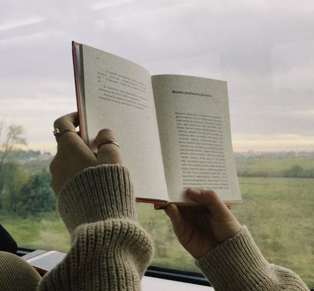
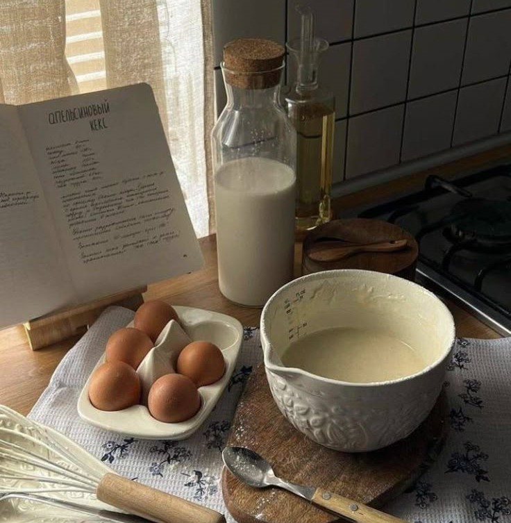
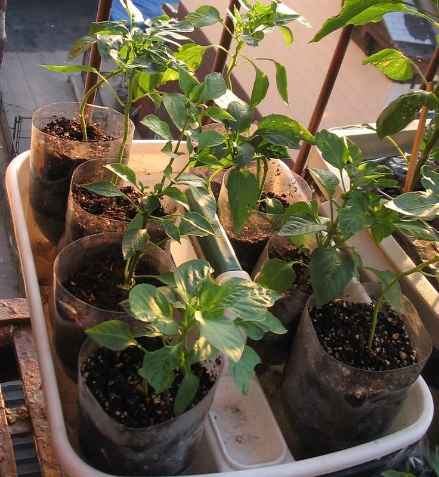
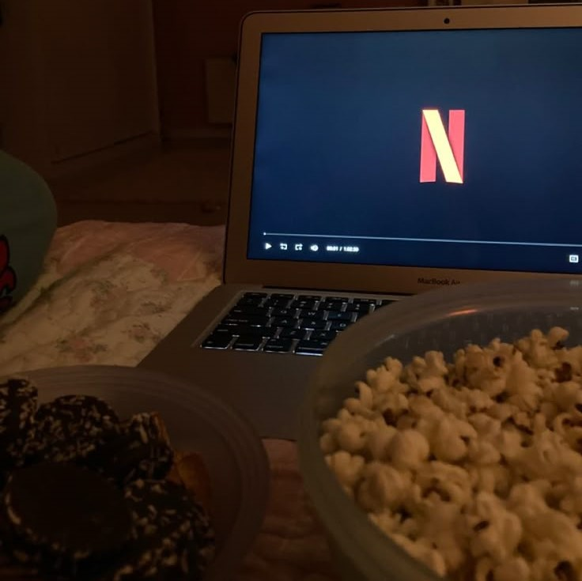

| Picture | Hobby | Description |
|---|---|---|
|  | Reading novels 📖 | I love reading novels, and I prefer them in the mystery, horror, and action genres because they are often unpredictable and filled with unexpected plot twists. They made me reflect and think more deeply. Apart from that, I learn many new things such as Law, history or survival tips. |
|  | Baking 🍰 🍪 | I love baking and trying out new recipes with my mom. I often watch new recipes on Khairul Aming's Tik Tok videos and try them out and some end up burnt, and some turn out well. Apart from that, I have learned a lot about the right temperatures and the best ingredients for baking cakes or dessert. |
|  | Planting 🌱 | I also really enjoy planting, usually small ones like aloe vera, orchid flowers, and other pretty leaf plants. I always water them in the morning and evening. In the morning, it’s usually between 7 to 8 a.m., and in the evening around 5:30 to 6:30 p.m. We need to water it to prevent the plants from wilting.I like looking at plants because they make me feel calm and relaxed. |
|  | Watching Movies 🎬 | Finally, I like watching movies. Just like novels, I also like movies in the genres of science fiction, action,mystery, or horror. Usually, I watch movies with my family in the living room or with my friend in cinema. Sometimes, watching a movie together makes the atmosphere more lively because everyone is trying to predict where the story is going. |
©Copyrights 2025